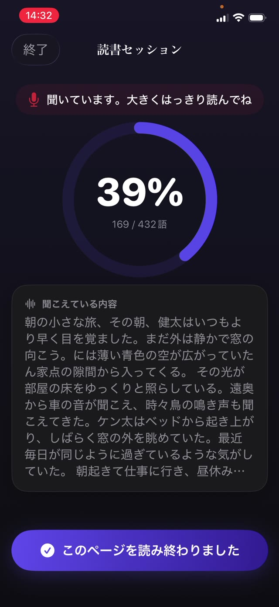

これが大切なのは、解読と理解のあいだの橋だからです。字を音にすることに注意をすべて使っている子には、文の意味に回す余力が残りません。それを育てる練習は、単純で、古くて、少し流行遅れです。ほとんどの日に、声に出して10分ほど読むこと。


流暢さの三つの部分
- 正確さ。形から推測した言葉ではなく、実際にページにある言葉を読むこと。
- 速さ。会話くらいの速さ。遅すぎると文がばらばらになり、速すぎるのはたいてい理解を手放したしるしです。
- 抑揚。読点で間を置く、疑問文で上げる、登場人物に声をつける。理解を証明するのはこの部分です。
なぜ声に出して、なぜあなたに向けて読むのか
黙読はすべてを隠します。子どもは10分間ページの上で目を動かしながら、何も取り込まないこともあり、それは二人とも気づけません。
音読は過程を聞こえるものにします。飛ばした言葉、最初の一文字から当てた言葉、文が崩れる場所が聞こえます。間違いが起きたその瞬間に拾える、唯一のやり方でもあります。
10分のやり方
- いらいらする水準より少し下の本を選びます。流暢さの練習には、だいたい読める本が要ります。歯が立たない本ではありません。
- タイマーを10分にかけます。終わりがはっきりして、交渉の余地がなくなります。
- 音読してもらいます。聞こえる距離に座り、沈黙を埋めたくなるのをこらえてください。
- 意味が失われないかぎり、文の途中で止めずに間違いを覚えておきます。
- 最後に、何が起きたのかを一つだけ本気で聞きます。一つです。クイズではありません。
やる気を折らずに直す
すべての誤りに飛びつきたくなります。やめてください。絶えず直されると、読書は採点される発表になり、子どもは採点されるものから降ります。
文の終わりまで待ってください。間違っても意味が生き残ったなら、そのまま流します。生き残らなかったなら、その言葉を言って、説明せずに先へ進みます。説明は後回しで、しかも繰り返し出てくる語だけで十分です。
ストップウォッチなしで進み具合を見る
1分あたりの語数は学校が測る指標で、家庭で追いかけるにはよくない数字です。時間を計られた子は速く読もうとします。数週間で見たいのは、区切りがなめらかになること、同じ語でつまずくことが減ること、抑揚が増えることです。
何をいつ読んだかの簡単な記録で十分です。それは練習が実際に起きているかを教えてくれて、いちばん大事な変数はそこだからです。
記録を自分で残す練習
Guardian Reader は、お子さまがスキャンしたページを音読するあいだ聞き取り、そのページの本文と照合して、一致率をその場で表示します。合格ラインは調整できるので、読み始めたばかりの子がティーンの基準で測られることはありません。
各セッションは日付、分数、ページ数、そして実際に読まれた語とともに保存され、誰も表を書き込まないまま、一年を通した練習の正直な姿になります。